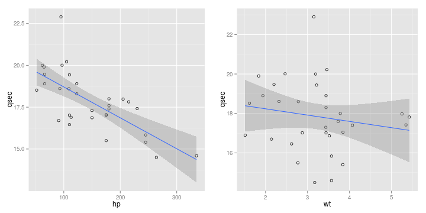

- Don't have access to a test track?
- Dealer won't let you 'see what this car can really do' on your test drive?
- Predict your vehicle's 1/4 mile time with this new app!
Michael Green
This app uses the mtcars data set in R to fit a linear model to predict 1/4 mile time given vehicle horsepower and weight.
The relationship between hp and weight and 1/4 mile speed can be seen:

fit1 <- lm(qsec~hp + wt, data = mtcars)
predict(fit1, data.frame(hp = 200, wt = 2),
interval = "prediction")
## fit lwr upr
## 1 15.24673 12.77815 17.7153
Here is the url:
Enjoy!